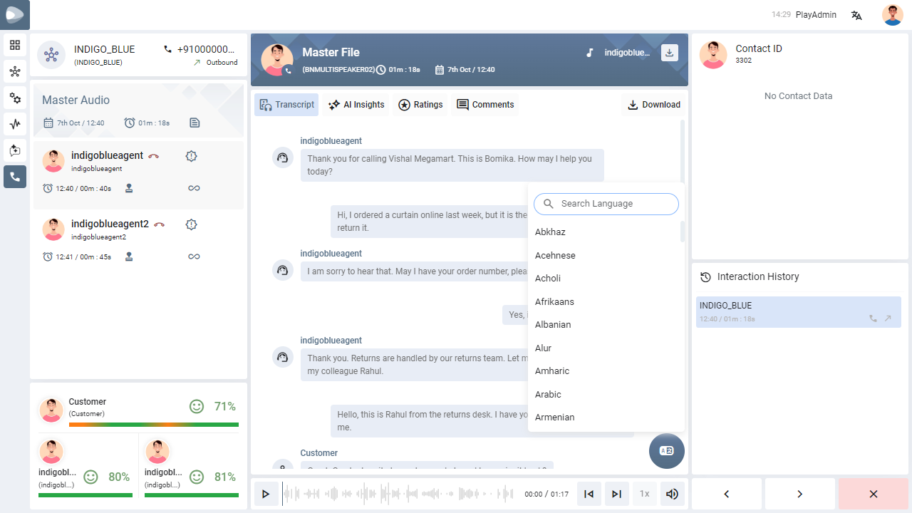

Transcript Translation
Read a call, video or chat transcript in the language you are comfortable with — pick a language, and the whole conversation is translated while the original stays one click away.
01
What this feature does
A short primer before you start.
Conversations are often held in one language but reviewed by people who read another. Translation turns the transcript of a recording into any language from a long, searchable list. Each translation is kept with the recording, so it is there the next time you open it.
- The Original transcript is never changed — it always stays in its own tab.
- Every language you translate into gets its own tab next to Original.
- You can download the transcript in the language you are viewing.
- A translation you no longer need can be removed.
For example, a call held in English can be translated to French for a reviewer in Paris and to Arabic for a reviewer in Dubai; each of them opens the tab for their language.
02
Translate a transcript
What to do, step by step.
-
Open the recordingGo to Records → All Records and open a recording. Call and video recordings show the Transcript tab; chat recordings show the conversation directly.
-
Click the translate buttonIt is the round button at the bottom-right corner of the transcript.
-
Find your languageA list of languages opens. Type in the Search Language box to narrow the list — for example, typing Fren leaves only French. Use Clear to start over.
-
Pick the languageClick the language. Three moving dots show while the translation is being prepared; this can take a few seconds for a long conversation.
-
Read the translationThe translated transcript opens in a tab named after the language, beside Original.

03
Working with the language tabs
Switching, downloading and removing.
| I want to… | Do this |
|---|---|
| See the original conversation | Click the Original tab. |
| Switch to another language I already translated | Click its tab. If many languages are open, the rest are under More languages. |
| Add one more language | Click the translate button again and pick another language — it gets its own tab. |
| Download the transcript | Click Download above the transcript. The file you get is in the language of the tab you are on, and its name carries that language. |
| Remove a translation | Click the close icon on the language tab. A message asks Remove the <language> translation? and explains that it will be permanently removed. Click Remove to confirm, or cancel to keep it. |
04
When translation is available
If you do not see the translate button.
Translation is part of the speech and text analysis features of PLAY, so it only appears when your administrator has switched those on:
- It must be enabled for your organisation.
- For a process that is rated manually, it is offered on call and video recordings only when Speech to Text is on for that channel, and on chat and email recordings only when Sentiment Analysis is on for that channel.
If a channel does not meet these conditions, PLAY simply does not show translation for it — nothing is broken.
05
Good to know
Small things that save time.
| Situation | What happens |
|---|---|
| You come back to a recording later | The languages you translated earlier are still there as tabs. |
| You open the language list again | The list is remembered, so it opens quickly. |
| The list is long | Use the search box instead of scrolling. |
| The translation does not appear | Wait a little longer for long conversations. If it never appears, try again or contact your administrator. |